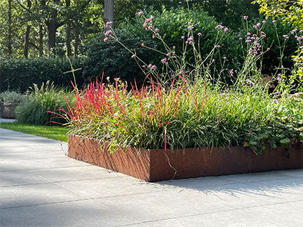
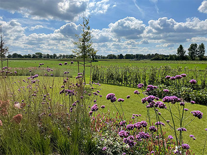
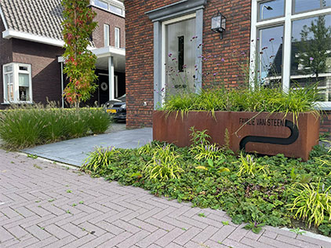
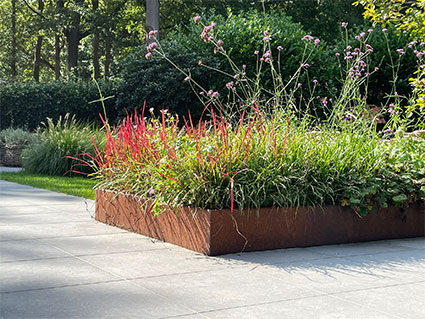
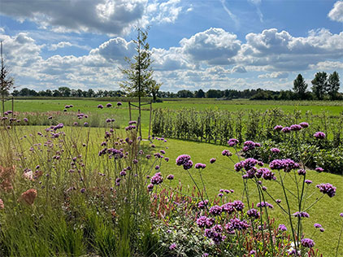
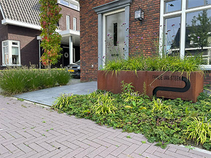

Uw droomtuin realiteit maken?
Bas Van Overveld heeft al meer dan 12 jaar ervaring in tuinontwerp en advies. Ook het daadwerkelijk realiseren van uw droomtuin kan Bas voor u verzorgen!
Geheel naar de wensen van klanten worden de meest
uiteenlopende ontwerpen door Bas gemaakt.
Strak modern of cottage stijl, prairietuin of Ibiza sfeer.
Van plant tot pergola: het ontwerp wordt compleet uitgewerkt
tot een volledig ingerichte tuin.
Plantenkennis & Advies
Omdat Bas jarenlang op de handelskwekerij van zijn familie
heeft gewerkt met een scala aan soorten planten,
heeft hij een zeer uitgebreide plantenkennis.
Deze kennis komt goed van pas bij het advies voor de juiste beplanting binnen het tuinontwerp.
Daarbij let hij niet alleen op uw wensen,
maar hij kijkt ook naar de juiste kleurcombinaties en de juiste plaatsing.
De complete tuin kan als totaalproject door Bas worden gerealiseerd,
dus ook de levering van de planten, bomen, tuinaccessoires en bestrating.
Daarvoor werkt hij samen met diverse vaste partijen, zoals hoveniers,
timmermannen en bestratingsspecialisten.
De beplanting komt rechtstreeks van goed aangeschreven
kwekers uit de buurt, om de kwaliteit te garanderen.
Uw tuin wordt dus kant en klaar opgeleverd!
 





{kind=link}
{kind=link}
{kind=link}